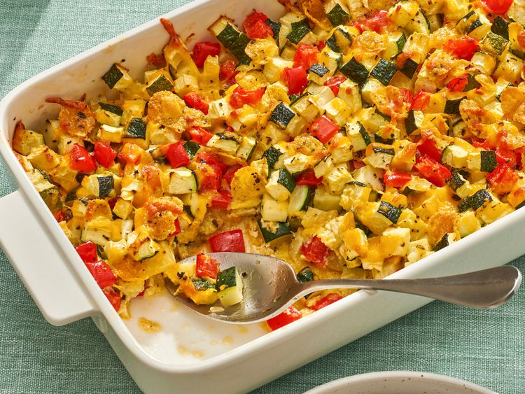

Zucchini Casserole

Recipe Description
Zucchini, cornflakes, and bell pepper. What?
Original Source: AllRecipes
Ingredients
- 8 cups diced zucchini
- 1 red bell pepper, chopped
- 1 cup cornflakes cereal (can be substituted with bread crumbs)
- 1 cup shredded Cheddar cheese
- 1/2 cup olive oil
- 1 tsp dried basil
- 2 large eggs, beaten
- salt and pepper to taste
Steps
- Preheat oven to 350F. Lightly oil 9x13 baking dish.
- Combine all ingredients in a bowl and mix thoroughly.
- Spread mixture evenly into baking dish.
- Bake until top is golden brown, about 45 minutes.
Back to Index